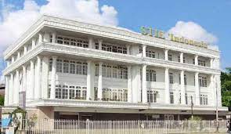

SEMINAR NASIONAL KEWIRAUSAHAAN
"Membangun Generasi Milenial Berjiwa Entreprenuer"
Hai sobat semua, untuk kalian para calon Entrepreneur. Minggu depan akan hadir untuk pertama kalinya Seminar Kewirausahaan, lho! Dengan tema :"Membangun Generasi Milenial Berjiwa Entreprenuer". Pandemi Covid-19 sangat berdampak di berbagai sektor perekonomian, salah satunya dibidang usaha UMKM dan Wirausaha. Pandemi ini memaksa kita untuk bertahan dan beradaptasi dengan kondisi yang tidak pasti seperti saat ini.Seminar Kewirausahaan hadir untuk memberi solusi agar usaha UMKM dan Wirausaha dapat berkembang di tengah pandemi ini. Ingin tahu lebih lanjut tentang seminar ini? Gak perlu pikir panjang, yuk langsung saja ikutan Seminar Kewirausahaan ini.
GUEST STAR
MENGHADIRKAN 4 NARASUMBER TERBAIK
Kami hadirkan 4 Narasumber terbaik pada acara seminar ini.
Pertama , ada Bapak Indra Suryatma, M.Pd. , Selaku Dosen STIE Pontianak.
Kedua, ada Bapak Nadiem Anwar Makarim , selaku pendiri Gojek.
Ketiga, ada Ibu Dea Valencia , selaku pengusaha muda pendiri batik kultur.
Keempat, ada Bapak Kim Hok , selaku pembicara acara seminar
Jangan sampai di lewatkan sobat, karena kita hadirkan bintang tamu yang keren dan terbaik dengan acara-acara yang tentunya seru serta menarik lho!
Pastinya kalian akan dilatih dan dibimbing jadi pengusaha di sini oleh para narasumber hebat kita.
Buruan sobat dan daftar sekarang juga ya!


.jpg)
.jpg)